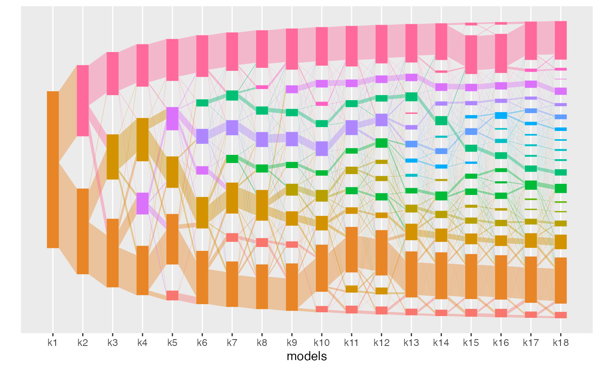
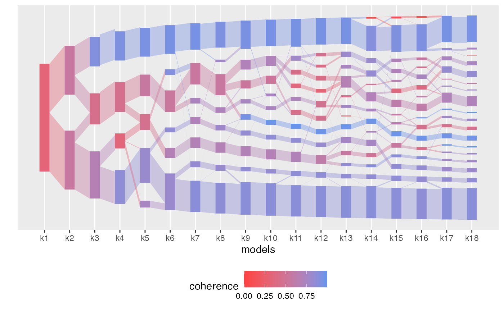
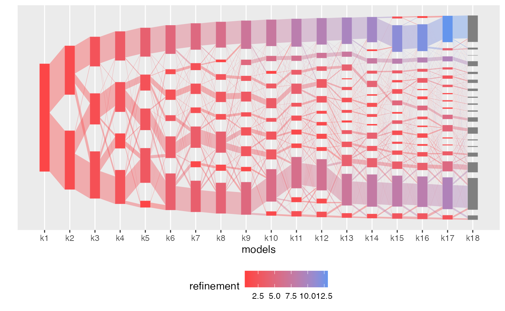
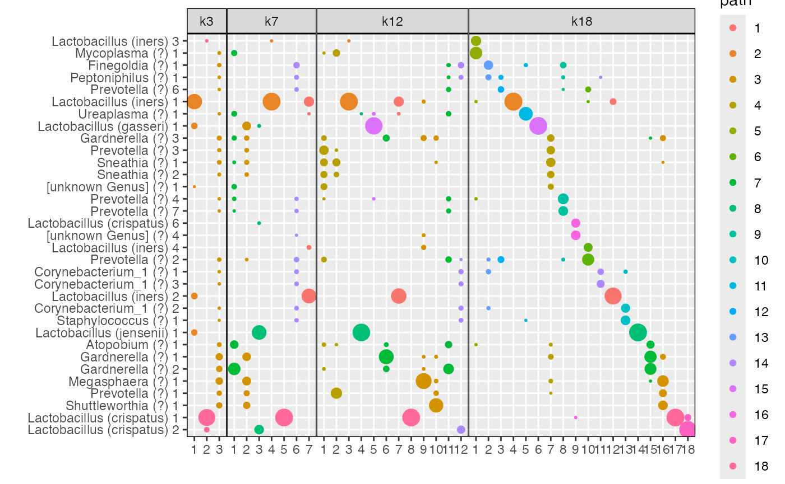
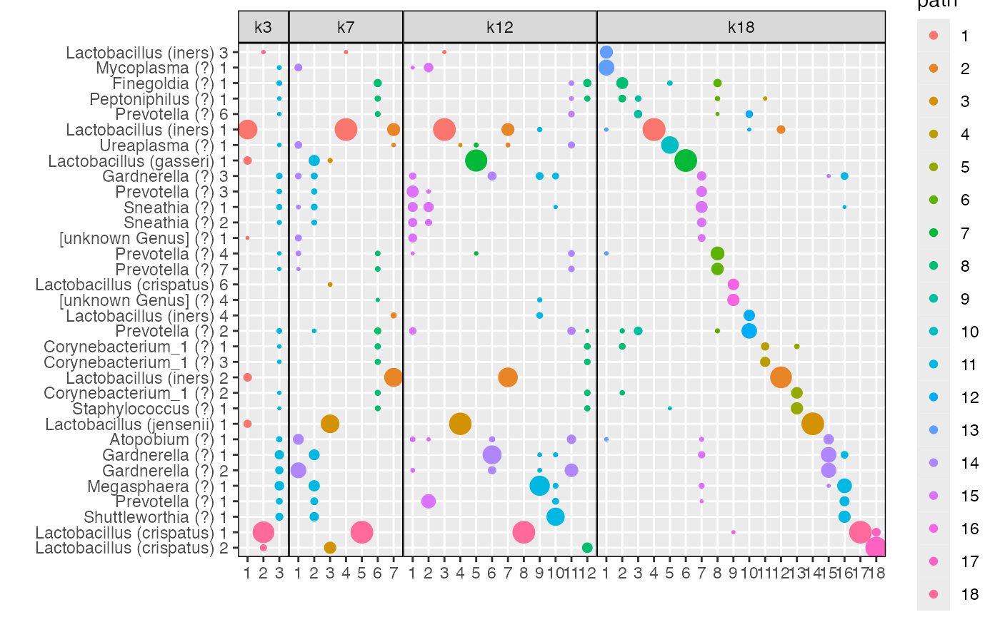
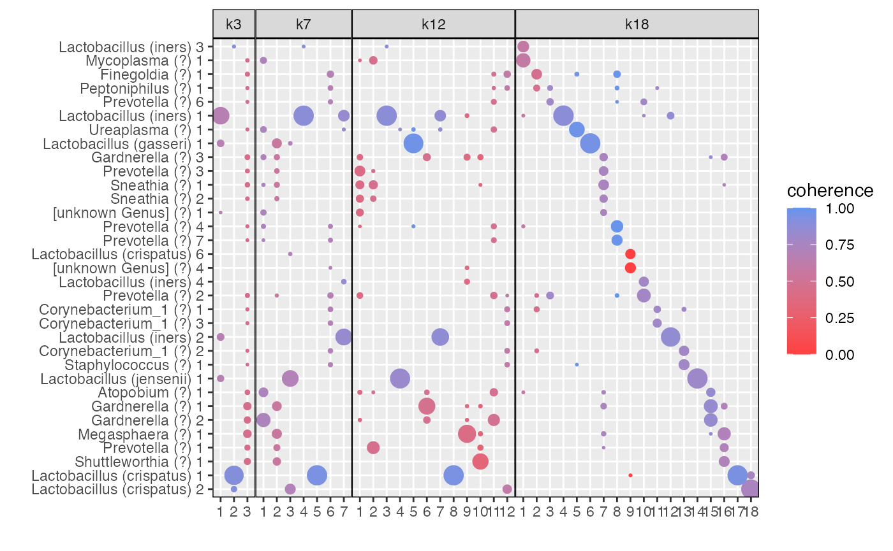

alto on vaginal microbiome datamicrobiome-demo.Rmd
library(alto)
#>
#> Attaching package: 'alto'
#> The following object is masked from 'package:stats':
#>
#> weights
library(dplyr)
#>
#> Attaching package: 'dplyr'
#> The following objects are masked from 'package:stats':
#>
#> filter, lag
#> The following objects are masked from 'package:base':
#>
#> intersect, setdiff, setequal, union
library(magrittr)
library(ggplot2)
library(tibble)
library(stringr)
library(tidyr)
#>
#> Attaching package: 'tidyr'
#> The following object is masked from 'package:magrittr':
#>
#> extractThis document showcases the alto package functions applied to vaginal microbiome data.
We use the data published with the article “Replication and refinement of a vaginal microbial signature of preterm birth in two racially distinct cohorts of US women” by Calahan et al., 2017, PNAS.
A .zip file containing the related data can be downloaded from the Stanford data catalog.
For convenience, the data file (i.e. the tables contained in the processed.rda file) has been attached to the alto package as vm_data. For details, type ?vm_data.
names(vm_data)
#> [1] "sample_info" "counts" "taxonomy"First, we do some pre-processing of the data. Specifically, we change the colnames to replace ASV DNA sequences by human-friendly names built from the taxonomy table.
# we create the human-friendly ASV names
# by concatenating Genus and Species and an identifying number
# as a given species can be represented by several ASVs
vm_data$taxonomy <-
vm_data$taxonomy %>%
as.data.frame() %>%
group_by(Genus, Species) %>%
mutate(
ASV_name =
paste0(
ifelse(is.na(Genus),"[unknown Genus]", Genus), " (",
ifelse(is.na(Species),"?", Species), ") ",
row_number()
)
) %>%
ungroup()
# then, we replace the colnames of the count matrix by these new names.
# Note that the tax table rows are ordered as the count matrix columns,
# allowing us to assign without matching first.
colnames(vm_data$counts) <- vm_data$taxonomy$ASV_namealto on these dataOur first step is to run the lda models for varying number of topics, i.e. from 1 to 18 topics. For this, we use the run_lda_models function. This can take a while on a personal computer. For example, it takes about 10 minutes on the authors’ laptops.
lda_varying_params_lists <- list()
for (k in 1:18) {lda_varying_params_lists[[paste0("k",k)]] <- list(k = k)}
lda_models <-
run_lda_models(
data = vm_data$counts,
lda_varying_params_lists = lda_varying_params_lists,
lda_fixed_params_list = list(method = "VEM"),
dir = "microbiome_lda_models/",
reset = FALSE,
verbose = TRUE
)We can now align the topics from each consecutive models:
aligned_topics_product <-
align_topics(
models = lda_models,
method = "product") # transport product
aligned_topics_transport <-
align_topics(
models = lda_models,
method = "transport") The alignments can be visualized with the plot function.
plot(aligned_topics_product)
plot(aligned_topics_transport)The number of key topics is computed with the function compute_number_of_key_topics. The function plot_number_of_key_topics can then be used to visualize that number across models.
compute_number_of_paths(aligned_topics_product) %>%
plot_number_of_paths() +
ggtitle("Method: product")
compute_number_of_paths(aligned_topics_transport) %>%
plot_number_of_paths() +
ggtitle("Method: transport")The number of key topics shows a small plateau around K = 12 with both methods (product and transport). As in the simulations, the number of key topics are lower and the plateau is stronger when key topics are identified by the product than by the transport alignment. The fact that the plateau is small is likely indicative that the data generation process does not strictly follow the LDA model assumption.
We can then evaluate the coherence and ancestry scores of these topics with the plot function and the color_by option.
plot(aligned_topics_product, color_by = "coherence")
plot(aligned_topics_transport, color_by = "coherence")
Most of the identified topics around \(K=12\) are coherent across \(K\).
plot(aligned_topics_product, color_by = "refinement")
plot(aligned_topics_transport, color_by = "refinement")Interestingly, by \(K=7\), the identified topics correspond to the four Lactobacillus community state types (CST) and to three non-Lactobacillus topics. Among these, one topic, dominated by a specific strain of Gardnerella and Atopobium, remains coherent across models. The two remaining topics at \(K=7\) have little overlap and high refinement scores, indicative that these topics successfully identify two distinct groups of communities, which are revealed as robust topics as \(K\) is increased.
The function plot_beta allows to visualize the betas for a selection (or all) models.


By \(K=18\) topics are sparse and share little overlap between them (Fig d), which may reflect over-fitting.
The plot_beta function also has a color_by option, which allows to visualize the coherence of topics.
plot_beta(aligned_topics_transport,
models = c("k3", "k7","k12","k18"),
threshold = 0.005,
color_by = "coherence")